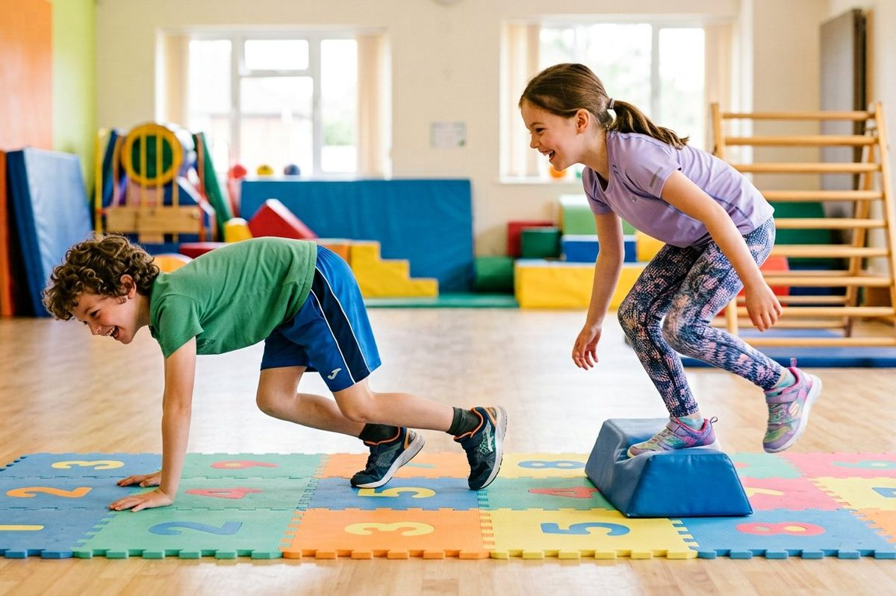

8 Movement Games That Get Kids Off the Sofa
Children do not need exercise programmes — they need reasons to move that are more interesting than a screen. What they do need is variety: running, jumping, crawling, balancing and throwing, because those are the movement patterns that build coordination for the rest of their lives. Every game below needs nothing you do not already own, and each one trains something specific without anyone saying the word exercise.
